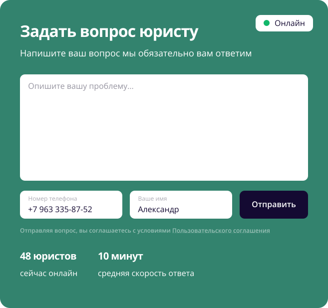

8 800 302-92
Бесплатный звонок юристу 24/7
Горячая линия по оказанию юридической помощи онлайн
Профессиональная помощь доступна круглосуточно – заявки обрабатываются в любое время дня и ночи. Обращаясь к специалистам «100 Юристов», вы можете рассчитывать на прозрачные, понятные условия сотрудничества
Задать вопрос юристу 8 800 302-92-70 Бесплатный звонок юристу 24/7
Круглосуточно

Бесплатно

Конфидециально

Быстро
Юридическая помощь
Срочно понадобились услуги профессионального юриста или адвоката? Решение есть! Наша горячая юридическая линия – возможность оперативно, абсолютно бесплатно получить ответ на любой вопрос. Теперь не нужно записываться на офлайн-прием и тратить время на поездку и очереди перед кабинетом.
Профессиональная помощь доступна круглосуточно – заявки обрабатываются в любое время дня и ночи. Обращаясь к специалистам «100 Юристов», вы можете рассчитывать на прозрачные, понятные условия сотрудничества.
Как получить бесплатную юридическую консультацию?
Задайте вопрос юристу бесплатно круглосуточно и без регистрации

По телефону горячей линии
8 800 302-92-70
Заказать звонок

Задать свой вопрос на сайте и получить ответ онлайн
Задать вопрос

Отправить запрос на обратный звонок юриста
Отправить запрос

Записаться на очную консультацию в офис
Записаться

Как мы сможем помочь вам?
Провести бесплатную консультацию на личном приёме у нас в офисе, по телефону горячей линии 8 800 302-92-70, в онлайн чате или по WhatsApp и Telegram
В ходе консультации будет проанализирована ваша ситуация с точки зрения законодательства Российской Федерации с последними изменениями на сегодняшний день
После чего наш специалист сможет определить все возможные пути решения вашей ситуации выявить все возможные подводные камни и подскажет как их избежать.
Как показывает практика данной консультации бывает достаточно для решения вашего вопроса. Если нет, то вы всегда сможете воспользоваться нашими услугами на выгодных условиях.
Специальности наших юристов
По семейным делам
Юрист помогает в решении жилищных, образовательных, имущественных, страховых, земельных и иных споров и вопросов по данному направлению. В зависимости от ситуации возможно применение досудебного и судебного урегулирования. Более подробную информацию получите в процессе юридической консультации
По вопросам ЖКХ
С каждым годом у граждан России возникает все больше вопросов к структурам жилищно-коммунального хозяйства. Некоторых интересует, почему они должны каждый месяц платить за лифт, проживая при этом на первом этаже. А кого-то возмущает, что коммунальщики вычитывают из заработной платы людей долги по услугам. Вопросов много. И все они нуждаются в грамотной правовой оценке. Бесплатная помощь наших юристов – лучший выход из ситуации. Специалисты мгновенно оценят ситуацию, разъяснят непонятные моменты, подскажут, как правильно оформить претензию/иск и куда ее направить
По жилищному праву
Квартирный вопрос из года в год остается камнем преткновения для многих граждан. Люди чуть ли не на смерть бьются за каждый причитающийся им квадратный метр. И эта борьба нередко сопровождается серьезными тратами как в виде финансов, так и нервов. Чтобы максимально защитить себя, оградить от возможных неприятных «сюрпризов» и сэкономить ресурсы, воспользуйтесь бесплатной юридической помощью. Специалисты подскажут, на что обратить внимание при покупке недвижимости, как получить разрешение на установку систем видеонаблюдения, как грамотно подойти к сделке купли-продажи и т.д.
По кредитам
Данное направление актуально не только для отдельных граждан, но и предпринимателей, крупных предприятий. Во время бесплатной консультации наши сотрудники подскажут, как правильно вести переговоры с кредиторами, как обезопасить имущество от возможного ареста. А также ответят на многие другие вопросы, связанные с кредитованием.
По земельным делам
На сегодняшний день земля – ценный актив, использовать который можно по-разному. Например, на ней можно добывать полезные ископаемые (при наличии таковых в недрах), производить высадку культурных растений, сдавать в аренду и т.д. В процессе эксплуатации земельных участков возникают разнообразные ситуации, большинство которых невозможно разрешить без грамотной юридической консультации. Получить ее можно круглосуточно и бесплатно через наш сервис.
По трудовым вопросам
Права трудящихся, несмотря на наличие соответствующего кодекса, постоянно нарушаются. Многие сотрудники сталкиваются с незаконными увольнениями, беспричинно лишаются оплаты отпускных, несут чрезмерную материальную ответственность и пр. Возможны и обратные ситуации, когда сами предприятия страдают от произвола персонала. Своевременное привлечение к возникшей проблеме адвоката позволяет с минимальными потерями урегулировать конфликт. Если вы столкнулись с подобной ситуацией, воспользуйтесь бесплатной юридической консультацией по телефону от «100 Юристов»
По приставам
Визит пристава – это практически всегда негативные эмоции. Особенно неприятно общение, если человек не знает, как правильно себя вести с сотрудниками службы. В этом случае без консультации не обойтись. Специалисты во время бесплатного звонка раскрывают нюансы взаимодействия пристава с должником. Например, юристы расскажут, что сотрудники имеют права беспокоить человека с 6 утра до 10 вечера и т.д.
По гражданским делам
Юрист помогает в решении жилищных, образовательных, имущественных, страховых, земельных и иных споров и вопросов по данному направлению. В зависимости от ситуации возможно применение досудебного и судебного урегулирования. Более подробную информацию получите в процессе юридической консультации

Блок для SEO текста
Срочно понадобились услуги профессионального юриста или адвоката? Решение есть! Наша горячая юридическая линия – возможность оперативно, абсолютно бесплатно получить ответ на любой вопрос. Теперь не нужно записываться на офлайн-прием и тратить время на поездку и очереди перед кабинетом.
Профессиональная помощь доступна круглосуточно – заявки обрабатываются в любое время дня и ночи. Обращаясь к специалистам «100 Юристов», вы можете рассчитывать на прозрачные, понятные условия сотрудничества.
Показать весь текст
Отзывы наших клиентов
Хочу поблагодарить Веру Владимировну за оказанную мне помощь, объяснила что да как, на душе стало намного легче
Вопрос:
Заберут ли меня в случае общей мобилизации на войну если я
Спасибо огромное за грамотную помощь. Ответили очень быстро, проконсультировали, подсказали и самое главное помогли в моей ситуации. Высоко квалифицированный специалист, спасибо
Вопрос:
Заберут ли меня в случае общей мобилизации на войну если я
Хочу поблагодарить Веру Владимировну за оказанную мне помощь, объяснила что да как, на душе стало намного легче
Вопрос:
Заберут ли меня в случае общей мобилизации на войну если я

Темы справочных материалов
А
Автокредит Авторское право Автоюрист Административное право
Б
Банкротство
В
Военное право
Г
Гражданское право
Ж
Жилищное право
З
Земельное право Защита прав потребителей
И
Ипотека Исполнительное производство
К
Корпоративное право Кредиты
М
Медицинское право Миграционное право
Н
Наследственное право Недвижимость
О
Образование
С
Семейное право Соцобеспечение Судопроизводство
Т
Таможенное право Трудовое право
У
Уголовное право
Ю
Юридические услуги